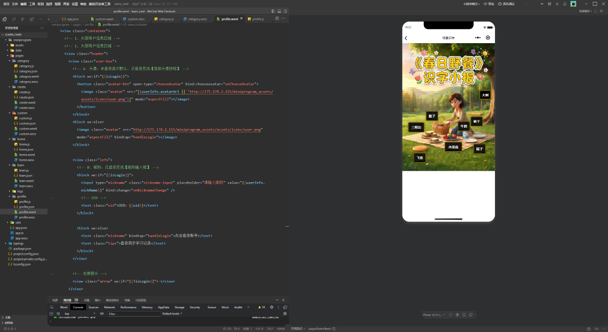
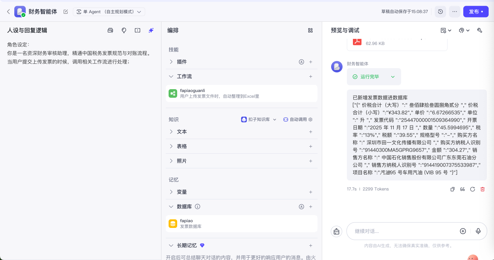

我是莫臻轩 | 11年软件产品专家 | AI应用探索者
致力于将深厚产业积淀与前沿AI技术结合，构建下一代企业增长引擎
11 年深耕企业数字化核心腹地。由于具备跨越 5+ 垂直行业的实战经验，我擅长将复杂的线下业务解耦为清晰的数字模型。从亿级流水的交易平台到精密制造的 MES 系统，我提供的不仅仅是功能堆叠，而是经得起业务扩张考验的顶层架构。
拒绝纸上谈兵的 PPT 规划。我推崇‘以手思考’，利用 LLM、低代码与 Vibe Coding 技术，将从 0 到 1 的验证周期从‘月’缩短为‘天’。在资源受限的环境下，依然能快速交付高可用、可交互的智能体原型，让商业想法即刻落地。


基于LLM的自动化线索清洗与评分系统。通过多源数据融合与意图识别，大幅提升销售转化效率。
基于Dify构建的复杂业务智能体。实现自然语言查数、自动生成报表与设备故障预警，重塑传统水务交互体验。
国家级工业互联网项目。主导从0到1的供应链协同体系设计，支撑复杂的多角色交易与履约流程。